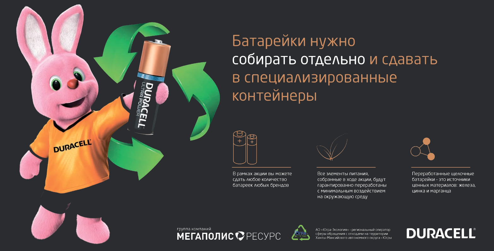

Знаешь ли ты?
Каждая выброшенная в обычное мусорное ведро батарейка становится причиной отравления
- 20 м ² почвы
- 300 - 500 л подземных вод
- 2 деревьев
- 2 кротов
- 1 ежа
Батарейки могут быть переработаны
Каждая выброшенная в обычное мусорное ведро батарейка становится причиной отравления
Сортировка происходит вручную по химическим типам. Для увеличения качества сортировки батарейки дополнительно контролируются по составу перед дроблением
Батарейки измельчаются промышленным шредером, после магнитами отделяются оболочки от активной массы содержимого батарейки.
Активная масса промывается и отделяется электролит. При этом уменьшается количество раствора при последующем растворении активной массы.
Активная масса растворяется, выделяется марганец и цинк металлический при помощи электролиза.
Отфильтровывается графит. Вода возвращается обратно в цикл.
Эффективность утилизации — 94,4% (на 1 000 кг батареек извлекается 944 кг полезных материалов) из них:
цинка
марганца
графита
электролита
Антикоррозийное цинковое покрытие, производство латуни.
Используется в металлургии
Используется в хим. и мет. промышленности для нейтрализации кислот
Используется в качестве сырья для производства топлива методом пиролиза